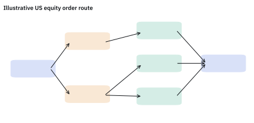
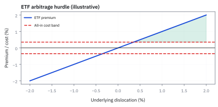
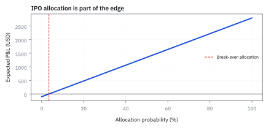
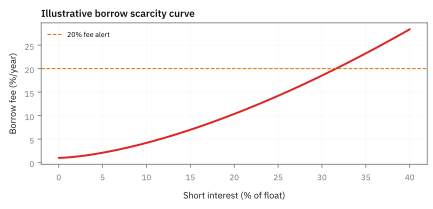

24.3 Exchanges, Brokers, ETFs, IPOs, and Securities Lending
เส้นทางจาก signal ถึง fill มีผู้เล่นและต้นทุนมากกว่าปุ่ม buy หนึ่งปุ่ม
ซื้อ MSFT 50,000 หุ้นที่ราคาตัดสินใจ \$410.00 ได้ที่ exchange A 30,000 หุ้นราคา 410.03 fee 0.002 และ dealer B 20,000 หุ้นราคา 410.01 fee 0.004 ต้นทุนการส่งคำสั่งเท่าไร?
เฉลย: 960 + 280 = \$1,240 หรือ \$0.0248 ต่อหุ้น alpha ที่คาดไว้ \$16,400 จึงเหลือ \$15,160 ทางที่ fee ต่ำกว่ากลับแพงกว่า เพราะราคาที่ได้แย่กว่า
ศัพท์และสถาบันที่ต้องรู้ก่อนส่ง order
- exchange
- สถานที่ซื้อขายที่มี rule, matching engine และ market data สำหรับจับคู่คำสั่ง ใช้สร้าง price discovery และกำกับการเข้าถึงสมาชิก
- broker
- ตัวกลางที่รับคำสั่งลูกค้า ส่งต่อหรือจัด execution และดูแล account ใช้เชื่อม investor กับ venue โดยมี duty, fee และ routing policy
- dealer
- ผู้ค้าหลักทรัพย์ที่เสนอ bid และ ask จาก inventory หรือ balance sheet ของตน (ถ้าวาง quote สองฝั่งต่อเนื่องเรียก market maker) ใช้ให้ liquidity แต่รับ inventory และ adverse-selection risk
- alternative trading system (ATS)
- ระบบจับคู่คำสั่งนอก exchange แบบดั้งเดิม ใช้ให้ผู้เข้าร่วม trade ตามกติกาและความเป็นส่วนตัวเฉพาะ venue แต่มี fragmentation risk
- national best bid and offer (NBBO)
- best displayed bid และ best displayed offer ที่รวบรวมจาก United States trading venues ใช้เป็น reference สำหรับ routing และ execution-quality review
- order routing
- การตัดสินใจส่ง order ไป venue ใด ด้วยราคา, fill probability, fee, latency และ information leakage ใช้เปลี่ยน intent ให้เป็น execution policy
- exchange-traded fund (ETF)
- กองทุนที่ share ซื้อขายระหว่างวันบน exchange และถือ basket ของสินทรัพย์ ใช้ให้ investor ได้ exposure หลายตัวผ่าน security เดียว
- net asset value (NAV)
- มูลค่าสินทรัพย์สุทธิของ ETF หารด้วยจำนวน shares ใช้เทียบ market price กับมูลค่าของ underlying basket
- authorized participant (AP)
- สถาบันที่ทำ creation หรือ redemption กับ ETF issuer โดยแลก basket กับ creation units ใช้เป็นกลไกหลักลด premium และ discount
- initial public offering (IPO)
- การเสนอขาย share ต่อสาธารณะเป็นครั้งแรก ใช้ให้บริษัทระดมทุนและสร้าง market price แต่ราคาเปิดอาจมี allocation และ information uncertainty
- high-frequency trading (HFT)
- การซื้อขายด้วยระบบอัตโนมัติที่เน้น latency ต่ำและ order lifetime สั้น ใช้ตอบสนองข้อมูลและจัด liquidity แต่ต้องควบคุม runaway order และ technology risk
- securities lending
- การให้ยืม share หรือ bond แลก collateral และ fee ใช้รองรับ short sale, settlement และ liquidity โดยมี recall และ counterparty risk
- borrow fee
- ค่าธรรมเนียมรายปีหรือรายวันที่ผู้ short จ่ายเพื่อยืม security ใช้สะท้อน scarcity และเป็นต้นทุนที่ต้องรวมใน expected P&L
- payment for order flow (PFOF)
- ค่าตอบแทนที่บาง dealer จ่ายให้ broker เพื่อรับ retail order ใช้เป็นรายได้ของ broker แต่สร้างคำถามเรื่อง routing incentive และ execution quality
- best execution
- หน้าที่ใช้ความพยายามสมเหตุสมผลเพื่อให้ลูกค้าได้ผลลัพธ์ดีที่สุดตามราคา, speed, likelihood และขนาด ใช้ตรวจ broker ด้วยหลักฐาน ไม่ใช่ดู fee อย่างเดียว
- market maker
- dealer ที่วาง bid และ ask เพื่อพร้อมซื้อขายทั้งสองฝั่ง ใช้เติม liquidity ให้ตลาดแต่รับ inventory risk กับความเสี่ยงจากคนที่มีข้อมูลดีกว่า
- Volume-Weighted Average Price (VWAP)
- ราคาซื้อขายเฉลี่ยถ่วงน้ำหนักด้วยปริมาณในแต่ละช่วงเวลา ใช้เป็นเกณฑ์เปรียบเทียบคุณภาพการส่งคำสั่งของโบรกเกอร์และตรวจสอบการดึงเวลาส่งคำสั่ง
สัญลักษณ์และหน่วย
| สัญลักษณ์ | ความหมาย | หน่วย |
|---|---|---|
| $Q$ | จำนวน shares ใน order | shares |
| $P_0$ | arrival หรือ decision price ต่อ share | USD/share |
| $P_f$ | ราคา fill เฉลี่ยต่อ share | USD/share |
| $b,a$ | best bid และ best ask | USD/share |
| $c_v$ | explicit venue fee หรือ rebate ต่อ share | USD/share |
| $P_{ETF}$ | market price ของ ETF share | USD/share |
| $NAV$ | มูลค่าสินทรัพย์สุทธิต่อ ETF share | USD/share |
| $\pi$ | premium หรือ discount ของ ETF เทียบกับ NAV | fraction |
| $N$ | จำนวน shares ที่ยืมและ short | shares |
| $f_b$ | borrow fee ต่อปีที่คิดบนมูลค่า short | fraction/year |
| $r$ | funding หรือ risk-free rate ต่อปี | fraction/year |
| $V_{IPO}$ | จำนวน shares ที่จัดสรรใน IPO | shares |
ที่มาที่ไป: รู้ว่าคำสั่งของเราเดินทางผ่านใครบ้าง
คนที่เรียนคณิตศาสตร์การเงินมามักไม่รู้ว่าเมื่อกดส่งคำสั่ง มันเดินทางผ่านใครบ้างกว่าจะถึงตลาด และแต่ละขั้นมีใครได้ประโยชน์อะไร
ความไม่รู้นั้นมีราคา เพราะแต่ละตัวกลางมีแรงจูงใจของตัวเอง และการเลือกเส้นทางของคำสั่ง ส่งผลต่อราคาที่เราได้จริง
นอกจากนั้นยังมีความเสี่ยงที่มองไม่เห็นจนกระทั่งมันเกิด คือความเสี่ยงว่าตัวกลางเองจะล้ม ซึ่งเคยเกิดขึ้นมาแล้วและทำให้ลูกค้าเข้าถึงทรัพย์สินของตัวเองไม่ได้เป็นเวลานาน
หัวข้อสุดท้ายของเล่มนี้จึงพากลับมาที่พื้นฐานที่สุด คือโครงสร้างของตลาดที่ทุกอย่างในเล่มเกิดขึ้นบนนั้น
หนึ่ง order มีหลายชั้นของ market design
order มีเส้นทาง: ผลลัพธ์ไม่ได้ขึ้นกับราคาที่เห็นอย่างเดียว แต่ขึ้นกับว่าไปถึงใคร เมื่อไร และถูกจับคู่ตรงไหน.
exchange ตั้งกติกาและลำดับจับคู่. broker รับคำสั่งลูกค้าแล้วส่งต่อ. dealer หรือ market maker อาจรับเป็นคู่สัญญาเอง; alternative trading system (ATS) คือ venue เพิ่มอีกแห่ง.
National Best Bid and Offer (NBBO) คือภาพ bid และ ask ที่ดีที่สุดจากหลาย venue ไม่ใช่สัญญาว่าคุณจะได้ fill ราคานั้น. quote อาจถูกคนอื่นรับไปก่อน หรือคิวของคุณอยู่ด้านหลัง.
เก็บเวลาเริ่มตัดสินใจ, เวลาส่ง, fill, cancel และ fee ให้ตามรอยได้. latency กับ queue position เป็นส่วนของผลลัพธ์จริง ไม่ใช่ footnote.
จุดกำเนิดของ Implementation Shortfall: ทำไมต้องเทียบกับราคาที่ตัดสินใจ
ราว ๆ ทศวรรษ 1980 ผู้จัดการกองทุนสถาบันวัดคุณภาพการส่งคำสั่งด้วย Volume-Weighted Average Price (VWAP) หรือราคาปิดของวัน แต่ André Perold (1988) ศาสตราจารย์แห่ง Harvard ชี้ให้เห็นช่องโหว่ร้ายแรง: โบรกเกอร์สามารถดึงคำสั่งไว้รอช่วงบ่าย แล้วค่อยส่งตอนมี volume หนาแน่นเพื่อให้ได้ราคาใกล้เคียงกับ VWAP
แต่หากตอนเช้าผู้จัดการกองทุนตัดสินใจซื้อที่ราคา \$100 ทว่าโบรกเกอร์ซื้อจริงตอนบ่ายที่ \$105 แม้ราคาซื้อจะดีกว่า VWAP ยามบ่ายที่ \$105.05 กองทุนก็เสียหายไปแล้วถึง \$5 ต่อหุ้นจากการรอช้า
Perold จึงเสนอ Implementation Shortfall เพื่อเปรียบเทียบผลตอบแทนของพอร์ตจำลองบนกระดาษที่ได้ของทันที ณ ราคาที่ตัดสินใจ กับผลตอบแทนที่กองทุนได้รับจริงในโลกแห่งความเป็นจริง
ขั้นที่ 1 — นิยามของต้นทุนการส่งคำสั่งจริง เทียบกับราคาที่ตัดสินใจ
สองก้อนนี้เป็น นิยาม ของวิธีวัด ไม่ใช่ผลที่พิสูจน์ เกณฑ์เทียบคือราคาตอนที่ตัดสินใจ ไม่ใช่ราคาเปิดหรือราคาเฉลี่ยของวัน เพราะสิ่งที่อยากรู้คือการลงมือทำแพงกว่าความตั้งใจเท่าไร เครื่องหมายสลับกันระหว่างสองฝั่ง เพราะการซื้อแพงขึ้นคือเสีย ส่วนการขายถูกลงคือเสีย ก้อนที่สองคือค่าธรรมเนียมที่จ่ายจริง ซึ่งบวกเข้าไปทั้งสองฝั่ง การสลับเครื่องหมายผิดคือข้อผิดพลาดที่ทำให้รายงานว่าทำได้ดีกว่าเกณฑ์ทั้งที่แย่กว่า
$Q$ คือ shares, $P_0$ คือ decision price USD/share, $P_f$ คือ average fill USD/share และ $c_v$ คือ explicit venue cost USD/share; สำหรับ buy ราคา fill สูงกว่าจุดตัดสินใจเป็น cost ส่วน sell กลับเครื่องหมายเพื่อให้ cost เป็นบวก
การพิสูจน์ Implementation Shortfall: พอร์ตจำลองลบพอร์ตจริง
เมื่อซื้อหุ้นได้ครบเต็มจำนวน พจน์ที่สามที่เป็นค่าเสียโอกาสจะเท่ากับศูนย์ทันที ทำให้ต้นทุนรวมเหลือเพียงผลต่างของราคา fill ถัวเฉลี่ยเทียบกับราคาเริ่มแรก รวมกับค่าธรรมเนียมซื้อขาย
หากราคาตลาดวิ่งขึ้นไปไกลแต่คำสั่งจับคู่ไม่ได้เลย ผลตอบแทนจริงจะเป็นศูนย์ และ Implementation Shortfall ทั้งก้อนจะกลายเป็นค่าเสียโอกาสที่เกิดจากการไม่ส่งคำสั่งอย่างดุดัน
ผลตอบแทนบนกระดาษคิดจากกำไรหากได้หุ้นครบทุกหน่วย ณ ราคาตัดสินใจทันทีโดยไม่มี friction ใด ๆ
ผลตอบแทนจริงคิดจากราคาปิดหักราคาที่ซื้อได้จริงแต่ละก้อน ลบด้วยค่าธรรมเนียม venue และโบรกเกอร์
เมื่อนำพอร์ตจำลองมาลบพอร์ตจริง ราคาปลายทางของหุ้นที่ซื้อสำเร็จจะหักล้างกันไปจนหมด
พจน์แรกคือ slippage จากราคาที่วิ่งหนี พจน์สองคือค่าธรรมเนียม และพจน์สามคือต้นทุนค่าเสียโอกาสของหุ้นที่ไม่ได้ของ
แล้วเอาไปใช้ทำอะไรได้จริงบ้าง
การรู้ว่าใครทำหน้าที่อะไรในตลาด ทำให้เข้าใจว่าเงินและความเสี่ยงไหลไปทางไหน
ใช้เข้าใจว่าคำสั่งของเราเดินทางผ่านใครบ้างกว่าจะถึงตลาด และแต่ละขั้นมีต้นทุนอะไร
ใช้เข้าใจกลไกการยืมหลักทรัพย์ ซึ่งเป็นสิ่งที่ทำให้การขายยืมเป็นไปได้และมีต้นทุน
ใช้ประเมินความเสี่ยงจากคู่ค้า ซึ่งเป็นความเสี่ยงที่มองไม่เห็นจนกระทั่งมันเกิด
ภาพที่ 24.3a — order routing map จาก investor ถึง fill

แผนภาพนี้เป็นเส้นทางตัวอย่างของ United States (US) equity order: investor ส่งผ่าน broker ไปยัง exchange, ATS หรือ dealer; feedback จาก fill และ market data ต้องย้อนกลับมาเพื่อ transaction-cost analysis (TCA) และ surveillance
คำนวณแต่ละ venue ก่อนรวม
venue A มี fee ต่อหุ้นต่ำกว่าแต่ซื้อแพงกว่า จึงมีต้นทุนรวมต่อหุ้น \$0.032 ส่วน B มี fee สูงกว่าแต่ต้นทุนรวม \$0.014 เราจึงต้องเทียบทั้งราคาและ fee
สมมติ gross signal alpha 8 basis points ของ notional 20.5 ล้าน จึงได้ \$16,400 ก่อน execution ตัวเลขนี้เป็น forecast สมมติ ไม่ใช่กำไรที่เกิดขึ้นแล้ว ลบ shortfall ได้ expected net 15,160 ก่อนความเสี่ยงอื่น
คำตอบ — ส่งคำสั่ง MSFT สองทาง แล้ววัด implementation shortfall
คำถาม: ซื้อ MSFT 50,000 หุ้นที่ราคาตัดสินใจ \$410.00 ได้ที่ A 30,000 หุ้นราคา 410.03 fee 0.002 และที่ B 20,000 หุ้นราคา 410.01 fee 0.004 ต้นทุนการส่งคำสั่งเท่าไร และกิน alpha 8 bp ไปเท่าไร?
ของที่มี: ขั้นที่ 1 และส่วนคำนวณแต่ละ venue
1. A: 30,000 × (0.03 + 0.002) = \$960 หรือ \$0.032 ต่อหุ้น
2. B: 20,000 × (0.01 + 0.004) = \$280 หรือ \$0.014 ต่อหุ้น
3. รวม \$1,240 หรือ \$0.0248 ต่อหุ้น alpha 50,000 × 410 × 0.0008 = \$16,400 เหลือ \$15,160
ตรวจเองใน 10 วินาที: 960 + 280 = 1,240 และ 1,240 ÷ 50,000 = 0.0248
แปลว่าอะไร: เลือก venue จาก fee ที่ติดป้ายไม่ได้ A มี fee ต่ำกว่าแต่ต้นทุนรวมต่อหุ้นสูงกว่าเกินสองเท่า transaction-cost analysis ต้องเทียบราคาที่ได้ fee latency และราคาที่วิ่งสวนหลัง fill ทุก venue
โค้ดตรวจ shortfall, ETF creation, IPO allocation, short sale และ option เทียบหุ้น
import numpy as np
isA = 30_000 * (410.03 - 410.00 + 0.002)
isB = 20_000 * (410.01 - 410.00 + 0.004)
assert abs(isA - 960) < 1e-6 and abs(isB - 280) < 1e-6
assert abs((isA + isB) / 50_000 - 0.0248) < 1e-9
alpha = 50_000 * 410 * 0.0008
assert abs(alpha - 16_400) < 1e-6 and abs(alpha - isA - isB - 15_160) < 1e-6
N = 10_000 # ETF creation arbitrage
assert abs(N * (101.20 - 100.00) - 12_000) < 1e-6 and abs(N * (0.20 + 0.35) - 5_500) < 1e-6
assert abs(N * (100.90 - 100.00) - N * 0.55 - 3_500) < 1e-6
assert abs(1_000 * (23 - 20 - 0.10) - 100 - 2_800) < 1e-9 # IPO
assert abs(0.2 * 2_800 + 0.8 * (-100) - 480) < 1e-9
assert abs(1_000 * (0.5 * 0.10 * 6 + 0.5 * 1.0 * (-4)) - 100 + 1_800) < 1e-9
gross = 20_000 * (30 - 27) # short sale with a hard borrow
fee = 20_000 * 30 * 0.36 * 30 / 365
assert gross == 60_000 and abs(fee - 17_753.42) < 0.01
assert abs(gross - fee - 1_600 - 40_646.58) < 0.01
assert abs(-20_000 * 2 - fee - 1_600 + 59_353.42) < 0.01
S0, u, R, K = 100.0, 1.05, 1.02, 100.0 # option vs stock, one period
Su, Sd = S0 * u, S0 / u
x = (max(Su - K, 0) - max(Sd - K, 0)) / (Su - Sd)
y = -x * Sd / R
C0 = S0 * x + y
assert abs(x - 0.5122) < 1e-4 and abs(y + 47.824) < 1e-3 and abs(C0 - 3.3955) < 1e-4
assert abs(S0 * x - 93.3706816) > 40 # the source's y cannot give 3.3955
for stock_T, call_T in ((Su, 5.0), (Sd, 0.0)):
assert abs((call_T - C0 * R) - x * (stock_T - S0 * R)) < 1e-9โค้ดตรวจ shortfall \$1,240 ของสอง venue กำไร creation arbitrage 6,500 และ \$3,500 expected value ของ IPO 480 และ −\$1,800 บัญชี short ที่ค่ายืม 36% ต่อปี และตัวอย่าง option เทียบหุ้นที่ได้กำไรสุทธิเท่ากันทุกทาง
การส่งคำสั่งขนาดใหญ่ใน Lit และ Dark Pool: ดุลยภาพ Almgren-Chriss
เมื่อพอร์ตมีขนาดใหญ่ขึ้น คำสั่งซื้อขายไม่สามารถกดรวดเดียวใน exchange ปกติ (lit pool) ได้ เพราะจะผลักราคาให้แย่ลงทันที แต่ถ้าซอยคำสั่งเป็นชิ้นเล็ก ๆ แล้วค่อย ๆ ส่ง การถือสถานะค้างไว้หลายชั่วโมงจะเจอกับความเสี่ยงจากราคาตลาดที่เหวี่ยงตัว
Robert Almgren และ Neil Chriss (2000) สร้างกรอบคำนวณที่ชั่งน้ำหนักระหว่าง expected cost จาก market impact กับความเสี่ยงจากความผันผวนของราคาหุ้น โดยแบ่งผลกระทบเป็น temporary impact ที่กระทบเฉพาะเสี้ยวที่กำลังส่ง กับ permanent impact ที่ดันราคาอย่างถาวร
ทางเลือกหนึ่งคือการแอบส่งคำสั่งใน dark pool ซึ่งไม่เปิดเผย order book สู่สาธารณะ แต่ผู้ส่งคำสั่งต้องเผชิญกับ adverse selection และ winner's curse: หากคำสั่งใน dark pool จับคู่ได้ทันที มักแปลว่าราคากำลังจะวิ่งสวนทางในวินาทีถัดไป
การพิสูจน์ Expected Shortfall และความเสี่ยงตาม model Almgren-Chriss
ตัวแปร $x_k$ คือจำนวนหุ้นคงเหลือที่ยังไม่ได้ขายหลังจากผ่านไป $k$ ช่วงเวลา ยิ่งเราปล่อยให้ $x_k$ ค้างอยู่ในมือนาน ความเสี่ยงที่ราคาจะแกว่งตัวด้วย volatility $\sigma$ ก็จะยิ่งทวีคูณตามกำลังสองของ $x_k$
การหา execution ที่เหมาะสมจึงเป็นการเลือกลำดับ $n_k$ เพื่อ minimize ผลรวมระหว่าง expected cost กับ penalty ของ variance โดยมีตัวคูณ $\lambda$ เป็นตัวกำหนดระดับความกลัวความเสี่ยง
รายรับรวมจากการทยอยขายหุ้น $X$ หน่วยเท่ากับผลรวมของราคาที่จับคู่ได้จริงคูณจำนวนหุ้นแต่ละไม้
ราคาที่ได้รับในแต่ละช่วงถูกหักด้วย temporary impact และสะสมผลกระทบแบบ permanent impact ของไม้ก่อนหน้า
การสลับลำดับผลบวกทำให้จัดกลุ่มตามจำนวนหุ้นคงเหลือ $x_j$ ในพอร์ตได้อย่างกระชับ
expected shortfall จึงแยกเป็นต้นทุน permanent impact ถ่วงด้วยหุ้นคงเหลือ กับ temporary impact ในไม้นั้น
ETF เชื่อม market price กับ basket
ETF มีสองราคา: market price ที่ trade บน exchange และ NAV ที่คำนวณจาก basket ณ valuation time. ถ้า ETF price สูงกว่า NAV ผู้ทำ arbitrage อาจซื้อ basket, ส่งให้ AP เพื่อ create ETF shares แล้วขาย ETF; ถ้าต่ำกว่าอาจซื้อ ETF, redeem เป็น basket แล้วขาย basket.
กลไกนี้ไม่ได้บังคับ equality ทันที เพราะ basket อาจมี spread, stale price, creation fee, tax, borrow constraint และ settlement delay. ใน bond ETF ช่วง stress market price อาจค้นพบ exit value ก่อน NAV ที่ mark จาก dealer quote จึงเห็น discount ไม่ได้แปลว่ากลไกพัง
จุดกำเนิดของ ETF: กลไก In-Kind Creation และขอบเขต No-Arbitrage
ก่อนปี 1993 กองทุนรวมทั่วไป (mutual fund) มีข้อจำกัดใหญ่: นักลงทุนซื้อขายได้แค่วันละครั้ง ณ ราคา NAV หลังปิดตลาด และเมื่อมีคนไถ่ถอน ผู้จัดการกองทุนต้องขายหุ้นออกมาเป็นเงินสด ทำให้เกิดภาระภาษีและต้นทุนซื้อขายที่กระทบคนถือยาว
หลังเหตุการณ์ Black Monday ในปี 1987 Nathan Most และทีมงานที่ American Stock Exchange จึงคิดค้นกลไกสร้างและไถ่ถอนแบบ in-kind โดยแลกเปลี่ยนเป็นตะกร้าหุ้นจริงแทนเงินสด เกิดเป็นกองทุนดัชนี SPY บนดัชนี S&P 500 ในปี 1993
กลไกนี้พึ่งพา Authorized Participant (AP) ซึ่งเป็นสถาบันการเงินที่ได้รับสิทธิพิเศษในการทำ arbitrage หากราคา ETF ในตลาดเบี่ยงเบนออกจาก NAV เกินกว่าต้นทุนการทำธุรกรรมจริง
ขั้นที่ 2 — premium/discount และ arbitrage hurdle
หาก basket ขายไม่ได้ทันที ต้องเพิ่ม liquidity buffer และ gap scenario ไม่ควรใช้ premium บนจอเป็นกำไรที่ล็อกแล้ว
$P_{ETF}$ และ $NAV$ เป็น USD/share, $\pi$ เป็น fraction, $N$ คือจำนวน shares และ cost ทุกตัวเป็น USD/share; arbitrage มี positive expected profit ก็ต่อเมื่อ premium ต่อ share ชนะ creation, trading และ funding cost รวม
$g$ คือส่วนต่างราคาต่อหน่วยก่อนหักต้นทุน ส่วน $c$ คือต้นทุนรวมต่อหน่วย ทั้งสองเป็นชื่อย่อในขั้นนี้ เมื่อลบกันแล้วจึงคูณด้วยจำนวนหน่วย $N$ เพื่อได้เงินสุทธิ $\Pi$
การพิสูจน์ขอบเขต No-Arbitrage สองทางของราคา ETF
ในสภาวะปกติ ขอบเขต $c_{upper}$ และ $c_{lower}$ จะแคบมากเพียงไม่กี่ basis points แต่ในยามวิกฤต เช่น ตลาดพันธบัตรภาคเอกชนที่มีสภาพคล่องต่ำ ต้นทุน $c_{basket}$ จะกว้างขึ้นอย่างรวดเร็ว
ราคา ETF บนกระดานจึงอาจดูเหมือนหลุดกรอบ discount เมื่อเทียบกับ NAV ทางบัญชี ทั้งที่จริงแล้วราคา ETF บนกระดานกำลังทำหน้าที่สะท้อนราคาซื้อขายจริงได้เร็วกว่า NAV ที่ยังคงใช้ราคาประเมินเดิม
เมื่อราคา ETF แพงกว่า NAV ผู้ทำ arbitrage จะซื้อตะกร้าหุ้น จ่ายค่า create และขาย ETF บนกระดาน
กำไรส่วนเกินจะถูกหักด้วยต้นทุนซื้อขายฝั่งตะกร้า ฝั่ง ETF และดอกเบี้ยเงินกู้ยืมระหว่างรอส่งมอบ
หากไม่มีโอกาสทำกำไรฟรี กำไรสุทธิของทั้งสองฝั่งต้องไม่เกินศูนย์ตามหลัก no-arbitrage
ผลลัพธ์คือราคา ETF จะแกว่งตัวอยู่ในกรอบระหว่างลบ $c_{lower}$ ถึงบวก $c_{upper}$ เสมอ
ภาพที่ 24.3b — ETF premium เทียบกับ arbitrage cost band

เส้นสีเขียวคือ premium scenario และเส้นประคือ all-in cost band 0.35%; เฉพาะช่วงที่ premium สูงกว่าต้นทุนและมี AP capacity เท่านั้นที่มีกำไรเชิงกลไก
worked example — creation arbitrage ใน ETF
สมมติ ETF มี market price 101.20 และ basket NAV 100.00 USD/share; premium เท่ากับ 1.20%. AP ซื้อ basket 10,000 shares แล้วจ่าย creation fee 0.20 และ trading/funding cost 0.35 USD/share. Gross premium คือ \$12,000; all-in cost คือ \$5,500; expected profit ก่อน operational risk คือ \$6,500. หาก ETF ลดเหลือ 100.90 ก่อน create เสร็จ revenue เหลือ \$9,000 และ profit เหลือ \$3,500; funding เพิ่ม \$800 เหลือ \$2,700 จึงต้องมี AP limit และ settlement control
IPO, rating agency และ information asymmetry
IPO มี primary issuance ซึ่งเงินเข้าบริษัท และ secondary trading ซึ่ง investor แลก share กันภายหลัง Underwriter ทำ bookbuilding, due diligence, price range และ allocation; ราคาเปิดจึงอาจมี underpricing เพื่อให้ distribution สำเร็จหรือชดเชย uncertainty.
Quant ที่ศึกษาผลตอบแทน IPO ต้องควบคุม allocation probability, lock-up expiry, first-day price, delisting และ market benchmark ไม่ใช่ซื้อสมมติฐานว่า “ราคาเปิดต้องขึ้น”.
Rating agency ให้ signal ของ credit risk แต่ rating เป็น lagging opinion ที่ขึ้นกับข้อมูลและ incentive; production control ต้องใช้ rating เป็น input หนึ่งร่วมกับ spread, leverage, default intensity และ market-implied information
จุดกำเนิดของแบบจำลอง IPO: ปริศนา Underpricing และ Winner's Curse
ข้อมูลเชิงประจักษ์ในตลาดหุ้นทั่วโลกพบข้อเท็จจริงน่าประหลาด: หุ้น IPO มักมีราคาปิดวันแรกสูงกว่าราคาจองซื้อเฉลี่ยราว 10% ถึง 15% เสมอ หากเป็นเช่นนี้ เหตุใดนักลงทุนรายย่อยจึงไม่ได้กำไรเป็นกอบเป็นกำจากการจองซื้อ IPO ทุกตัว?
Kevin Rock (1986) ศาสตราจารย์ด้านการเงิน ตอบคำถามนี้ด้วยแบบจำลอง information asymmetry โดยแบ่งนักลงทุนเป็นกลุ่มที่มีข้อมูลลึกซึ้ง (informed) กับกลุ่มที่ไม่มีข้อมูลพิเศษ (uninformed)
เมื่อมีดีลที่ราคาถูกกว่ามูลค่าจริง กลุ่ม informed จะแห่เข้ามาจองซื้อจนล้น ทำให้รายย่อยได้รับการจัดสรรมุมมองเพียงเศษเสี้ยว แต่ในดีลที่ตั้งราคาแพงเกินจริง กลุ่ม informed จะหนีหาย ปล่อยให้รายย่อยได้รับการจัดสรรไปเต็มจำนวน
ถ้าไม่ได้หุ้น ต้นทุนรายการไหนยังเกิด
กำหนดแบบฝึกว่าได้หุ้นครบหนึ่งพันด้วยโอกาส 20% หรือไม่ได้เลยอีก 80% research จ่าย \$100 ไม่ว่าจะได้หุ้นหรือไม่ แต่ trading cost เกิดเฉพาะโลกที่ได้หุ้น
คำนวณกำไรแต่ละโลกก่อนถ่วง probability จะได้ \$480 เท่ากับโอกาสได้หุ้นคูณกำไรซื้อขายหลัง fee แล้วหัก research ครั้งเดียว
ราคาออก \$23 ในแบบฝึกเป็นค่าที่กำหนด หากราคาวันแรกกับ allocation สัมพันธ์กันต้องใช้ joint scenarios โอกาสได้หุ้นอาจสูงในดีลที่ไม่ขึ้น จึงเอา probability เฉลี่ยคูณกำไรเฉลี่ยโดยสมมติ independence ไม่ได้
ขั้นที่ 3 — นิยามของผลตอบแทน IPO ที่ต้องถ่วงด้วยโอกาสได้รับจัดสรร
บรรทัดนี้เป็น นิยาม ของบัญชี ไม่ใช่ผลที่พิสูจน์ ก้อนในวงเล็บคือกำไรต่อหน่วยถ้าได้รับจัดสรรจริง แต่ต้องคูณด้วยโอกาสที่จะได้ เพราะดีลที่ราคาขึ้นแรงมักได้รับจัดสรรน้อย ส่วนดีลที่ได้เต็มจำนวนมักเป็นดีลที่ไม่มีใครอยากได้ ความสัมพันธ์ติดลบระหว่างสองอย่างนี้คือหัวใจของเรื่อง และเป็นเหตุผลที่ค่าเฉลี่ยของผลคูณ ต่ำกว่าผลคูณของค่าเฉลี่ยมาก ตามที่หัวข้อ 6.5 อธิบายไว้ ก้อนสุดท้ายคือต้นทุนที่จ่ายไปแล้วไม่ว่าจะได้รับจัดสรรหรือไม่
ถ้าได้ allocation, ใส่จำนวนหุ้น $Q$ คูณส่วนต่างระหว่างราคาขาย $P_1$ กับราคา IPO แล้วหัก trading cost และ research cost. นี่คือกำไรในโลกที่ได้หุ้นจริง
แต่ได้หุ้นไม่ทุกครั้ง จึงถ่วงกำไรด้วย probability ของ allocation $p_{alloc}$. การข้ามน้ำหนักนี้ทำให้ backtest ที่สมมติว่าได้หุ้นเต็มจำนวนโกงตัวเองแบบเนียน ๆ
การพิสูจน์ Winner's Curse ในการจัดสรรหุ้น IPO
ตัวอย่างนี้ใช้สมมติฐานว่าดีลดีมีราคาพุ่งขึ้น \$6 จากราคาจอง \$20 ส่วนดีลแย่ราคาหล่นลง \$4 หากโอกาสเกิดเท่ากันที่ฝั่งละ 0.5 ราคาเฉลี่ยบนหน้ากระดาษจะบวก \$1 หรือคิดเป็นผลตอบแทน 5%
แต่เมื่อนักลงทุน informed แห่จองดีลดีจนเราได้หุ้นเพียง 10% ขณะที่ดีลแย่เราถูกจัดสรรหุ้นมาเต็ม 100% ผลรวมสุทธิจึงกลายเป็นขาดทุนยับเยิน นี่คือคำอธิบายว่าทำไมวาณิชธนกิจจึงต้องตั้งราคา IPO ให้ต่ำกว่ามูลค่าจริงเพื่อจูงใจให้คนทั่วไปยอมเข้ามามีส่วนร่วม
ค่าเฉลี่ยของผลต่างราคาที่บวกสวยหรูไม่ได้การันตีผลกำไร เพราะโอกาสได้รับจัดสรรขึ้นอยู่กับคุณภาพของหุ้น
ดีลที่ดีจะถูกแย่งซื้อจนโอกาสได้หุ้น $p_{alloc}(G)$ ลดลงเหลือเพียงเสี้ยวเดียว
ส่วนดีลที่แย่จะไม่มีสถาบันแย่งซื้อ ทำให้ผู้จองซื้อทั่วไปได้รับจัดสรรเต็มร้อยละหนึ่งร้อย
ตัวเลขจริงชี้ว่าแม้ค่าเฉลี่ยดิบจะเป็นบวก \$1 ต่อหุ้น แต่ expected profit จริงกลับติดลบถึง \$1,800
ภาพที่ 24.3c — allocation probability เปลี่ยน IPO expected P&L

ผลตอบแทนนี้เป็น deterministic scenario ที่ราคาเสนอขาย $20$ และราคาออก $23$ ต่อ share หัก cost $0.10$; เส้นแสดงว่า edge ต่อหุ้นไม่เท่ากับ expected P&L เมื่อ allocation ไม่แน่นอน ใช้ research cost คงที่ \$100 เหมือนแบบฝึก เมื่อ allocation เป็นศูนย์จึงยังเสีย \$100
HFT และ securities lending เป็น infrastructure risk ด้วย
HFT ใช้ low-latency data, colocated servers และ automated order logic เพื่อ quote, hedge หรือ arbitrage ความคลาดเคลื่อนสั้นมาก ความได้เปรียบไม่ได้หมายความว่าไม่มี risk: clock drift, stale feed, cancel failure, duplicate order และ kill-switch failure อาจสร้าง position ใหญ่ใน milliseconds.
ระบบต้องคุมขนาดคำสั่งล่วงหน้าด้วย pre-trade notional limit และ message-rate limit ก่อน แล้วเสริมด้วย price collar, self-trade prevention, heartbeat และ kill switch อิสระที่ทดสอบจริง.
Securities lending ทำให้ short sale และ settlement เป็นไปได้ แต่ lender อาจ recall share, collateral haircut เปลี่ยน หรือ borrow fee พุ่งเมื่อ short interest สูง ต้อง mark borrow เป็น stochastic cost และทำ locate-before-order control
จุดกำเนิดของ Securities Lending และกลไก Prime Brokerage
ในตลาดหุ้น การขายชอร์ตโดยไม่มีการยืมหุ้นล่วงหน้า (naked shorting) เป็นสิ่งผิดกฎหมายเพราะนำไปสู่ความล้มเหลวในการส่งมอบหลักทรัพย์ (failure-to-deliver) ตามกฎเกณฑ์การยืมหลักทรัพย์ก่อนขายชอร์ตในสหรัฐฯ ผู้ลงทุนจึงต้องหาหุ้นมายืมก่อนส่งคำสั่งเสมอ
สถาบันการเงินขนาดใหญ่ เช่น กองทุนบำเหน็จบำนาญและกองทุนดัชนี ซึ่งถือครองหุ้นไว้เฉย ๆ หลายปี ยินดีนำหุ้นในพอร์ตมาให้ยืมเพื่อสร้างรายได้เสริมจากค่าธรรมเนียม borrow fee
Prime broker ทำหน้าที่เป็นตัวกลางเชื่อมระหว่างผู้ให้ยืมกับเฮดจ์ฟันด์ โดยกำหนดให้ผู้ยืมต้องวางเงินสดเป็นหลักประกัน (cash collateral) เกินมูลค่าหุ้นเล็กน้อย เช่น 102% และจ่ายดอกเบี้ยชดเชยที่เรียกว่า rebate rate กลับคืนมา
ขั้นที่ 4 — นิยามของบัญชีการขายชอร์ต ที่ต้องมีทุกก้อน
บรรทัดนี้เป็น นิยาม ของบัญชี ไม่ใช่ผลที่พิสูจน์ ก้อนแรกคือกำไรจากราคาที่ขายสูงกว่าราคาที่ซื้อคืน ซึ่งเป็นก้อนเดียวที่คนส่วนใหญ่นึกถึง ก้อนที่สองคือค่ายืมหุ้น ซึ่งคิดจากมูลค่าที่ขายและตามระยะเวลาที่ถือ ก้อนที่สามคือค่าธรรมเนียมซื้อขาย และก้อนสุดท้ายคือขาดทุนเมื่อถูกเรียกหุ้นคืนกลางทาง ก้อนสุดท้ายนี้วัดยากที่สุดแต่ทำร้ายที่สุด เพราะการถูกเรียกคืนมักเกิดตอนราคากำลังขึ้น ซึ่งเป็นตอนที่ไม่อยากปิดสถานะที่สุด
ใส่จำนวนหุ้นที่ short $N$ และส่วนต่างราคาเปิด $P_{sell}$ ลบราคาซื้อคืน $P_{buy}$. ได้ gross trading P&L เป็น USD
จากนั้นหัก borrow fee ตาม $f_b$ และเวลา $T$, trading cost $c_{trade}$ และ loss หากถูก recall $L_{recall}$. ทุกพจน์สุดท้ายต้องเป็น USD; thesis ถูกแต่ค่าเช่าหุ้นแพงก็ยังแพ้ได้
การแยกส่วนกระแสเงินสดและ Rebate Rate ของการขายชอร์ต
เมื่อหุ้นตัวใดมีคนต้องการชอร์ตเป็นจำนวนมากจนกลายเป็นหุ้นยืมยาก (hard-to-borrow) ค่าธรรมเนียม $f_b$ จะพุ่งสูงจนเกินกว่าอัตราดอกเบี้ย $r_c$ ส่งผลให้อัตรา rebate rate ติดลบ ผู้ชอร์ตจึงต้องเป็นฝ่ายควักเงินสดจ่ายให้ผู้ให้ยืมทุกวัน
นอกจากนี้ ผู้ให้ยืมมีสิทธิตามสัญญาในการเรียกหุ้นคืน (recall) ได้ทุกเมื่อ หากตลาดไม่มีหุ้นให้ยืมต่อ โบรกเกอร์จะบังคับซื้อคืน (forced buy-in) ทันทีที่ราคาตลาด ซึ่งมักเกิดขึ้นตอนเกิด short squeeze ทำให้เกิดผลขาดทุนก้อนโต $L_{recall}$
อัตรา rebate rate คำนวณจากดอกเบี้ยของเงินหลักประกัน $r_c$ ลบด้วยค่าธรรมเนียมยืมหุ้น $f_b$
กระแสเงินสดขาแรกคือเงินที่ได้รับจากการขายหุ้นในวันแรก และกระแสเงินสดขาออกคือเงินที่ใช้ซื้อหุ้นคืนในวันปิดสัญญา
เงินหลักประกันจะสร้างผลตอบแทนตามอัตรา rebate rate ตลอดระยะเวลาการยืม $T$ ปี
หากหุ้นมีการจ่ายปันผล ผู้ขายชอร์ตต้องจ่ายเงินชดเชยเงินปันผลเต็มจำนวนให้แก่เจ้าของหุ้นเดิม
ภาพที่ 24.3d — borrow fee เทียบกับ short interest

เส้นนี้เป็น mapping เชิงสอนจาก short interest เป็นเปอร์เซ็นต์ของ float ไปยัง borrow fee ต่อปี; ใช้กำหนด scenario และ locate policy ไม่ใช่ empirical universal curve
worked example — short sale ที่ดูดีแต่ fee กิน edge
กองทุน short 20,000 shares ของ GME ที่ 30.00 USD/share และตั้งใจซื้อคืนที่ 27.00 ภายใน 30/365 ปี (ค่ายืมหุ้นคิดตามวันปฏิทิน ถือ 30 วันจากปีละ 365 วัน รวมวันหยุด เพราะหุ้นถูกยืมอยู่ทุกวัน).
Gross trading profit คือ \$60,000. Borrow fee 36% ต่อปีบนมูลค่า short \$600,000 เป็น \$17,753.42 และ round-trip trading cost \$1,600. ถ้า recall บังคับ buy-in ที่ \$32.00 trading loss เป็น \$40,000; รวม fee และ cost ขาดทุน \$59,353.42. แม้ base case เหลือกำไร \$40,646.58 แต่ต้องมี locate status, borrow utilisation และ squeeze stress
ขั้นที่ 5 — ทำไมซื้อ option แทนหุ้น ทั้งที่หุ้นดูได้มากกว่า
หุ้นราคา \$100 พรุ่งนี้เป็น 105 หรือ 95.238 ดอกเบี้ยช่วงนี้ 2% call strike 100 ราคายุติธรรม \$3.3955 ถ้าหุ้นขึ้น ถือหุ้นได้ 5 แต่ถือ call ได้แค่ 5 − 3.3955 = 1.6045 แล้วจะซื้อ option ทำไม?
เทียบให้ถูกต้องเทียบของที่เสี่ยงเท่ากัน call หนึ่งตัวเท่ากับถือหุ้น 0.5122 หุ้นแล้วกู้ \$47.824 ตามหัวข้อ 13.1 เงินที่จ่ายวันนี้ถ้าฝากไว้จะโตเป็น $C_0R$ หรือ $S_0R$ จึงต้องหักออกก่อน stock ในสี่บรรทัดท้ายคือหุ้น 0.5122 หุ้น กำไรสุทธิจึงเท่ากันทุกทาง ขาขึ้นได้ 1.5366 ขาลงเสีย 3.4634 ทั้งสองแบบ
แบบจำลองนี้จึงไม่ได้บอกว่าหุ้นหรือ option ดีกว่า ส่วน 5 กับ 1.6045 เอาของที่เสี่ยงไม่เท่ากันมาเทียบ และลืมดอกเบี้ย
เอกสารต้นทางพิมพ์เงินสดของพอร์ตทำซ้ำเป็น −93.37 ซึ่งแทนแล้วไม่ได้ 3.3955 ค่าที่แก้สมการสองบรรทัดได้คือ −47.824
เหตุผลที่คนเลือก option จึงไม่ใช่กำไรที่มากกว่า แต่เป็นสามเรื่อง ใช้เก็งกำไรได้เหมือนหุ้น ซื้อ put แทนการ short ซึ่งรายย่อยทำได้ยากและต้องปิดเร็ว และใช้เงินน้อย หุ้นต้องจ่าย \$100 แต่ call จ่ายแค่ \$3.40 ซึ่งก็คืออัตราทดนั่นเอง
สังเกตว่าไม่มีบรรทัดไหนใช้โอกาสที่หุ้นจะขึ้น คนที่คิดว่าขึ้นแน่กับคนที่คิดว่าลงแน่ได้ราคา 3.3955 เท่ากัน ส่วนหุ้นยังนิยมกว่า เพราะเข้าใจง่ายเหมือนซื้อของหนึ่งชิ้น option ต้องเข้าใจ strike วันหมดอายุ และการตั้งราคา
กับดัก: fee ต่ำไม่ได้พิสูจน์ best execution
PFOF หรือค่าธรรมเนียม venue เป็นเพียง explicit transfer; broker อาจได้ fee ต่ำแต่ส่ง order ไปยัง quote ที่ fill แย่, latency สูง หรือ adverse selection สูงกว่า.
ระบบควบคุมจึงต้องมี venue-level transaction-cost analysis (TCA), SEC Rule 605/606 reporting review ตามขอบเขตที่ใช้ และ audit trail ที่ตรวจย้อนกลับได้จริง ไม่ใช่ดูตัวเลข fee เฉลี่ยตัวเดียวแล้วสรุปว่าดีที่สุด. รายงานควรดูทั้ง percentile และ exception queue ไม่ใช่ค่าเฉลี่ยอย่างเดียว
ข้อจำกัด: วิธีนี้สมมติอะไร และของจริงเป็นอย่างไร
| เรื่อง | วิธีนี้สมมติว่า | ของจริงเป็นอย่างไร | ผลที่ตามมาเวลาใช้งาน |
|---|---|---|---|
| โครงสร้างที่คงที่ | โครงสร้างตลาดไม่เปลี่ยน | เปลี่ยนตลอดตามเทคโนโลยีและกฎเกณฑ์ | ความรู้เรื่องกลไกต้องอัปเดตเรื่อย ๆ ไม่ใช่เรียนครั้งเดียวจบ |
| ความเป็นกลางของตัวกลาง | ตัวกลางทำหน้าที่อย่างเป็นกลาง | แต่ละรายมีแรงจูงใจของตัวเอง | ต้องเข้าใจว่าใครได้ประโยชน์จากการส่งคำสั่งของเราไปทางไหน |
| ความมั่นคง | ตัวกลางไม่ล้ม | เคยล้มมาแล้วและทำให้ลูกค้าเข้าถึงสินทรัพย์ไม่ได้ | ต้องกระจายคู่ค้าและเข้าใจว่าทรัพย์สินถูกเก็บแยกจริงหรือไม่ |
แถวล่างเป็นความเสี่ยงที่คนมองข้ามมากที่สุด จนกระทั่งเกิดเหตุจริง
บทสรุปปิดเล่ม
เส้นทางทั้งเล่มจบที่นี่: probability และ inference บอกว่า signal น่าเชื่อแค่ไหน, optimization และ risk กำหนดขนาดที่รับได้, pricing บอกมูลค่าภายใต้สมมติฐาน, และ market structure บอกว่ากำไรนั้นส่งถึงบัญชีจริงหรือไม่. Quant ที่ใช้ได้ต้องตรวจทั้งสี่ชั้นพร้อมกัน.
สรุปที่ใช้ได้จริง
- exchange, broker, dealer และ ATS เป็นชั้นของ market design ที่กำหนด price discovery, queue, fee และ execution risk
- implementation shortfall ต้องวัดจาก benchmark เดียวกันและรวม explicit fee, spread, latency และ adverse movement
- ETF premium/discount มีกลไก AP creation-redemption แต่ต้องชนะต้นทุน basket, funding, settlement และ liquidity ก่อน
- IPO expected P&L ต้องถ่วง allocation probability; rating agency เป็น signal ไม่ใช่ guarantee
- ระบบ HFT ต้องมีเบรกหลายชั้น เช่น price collar, message limit, ตัวกันคำสั่งของตัวเองจับคู่กัน, heartbeat และ kill switch ที่อีกทีมกดได้
- securities lending ทำให้ short เกิดได้ แต่ borrow fee, recall และ forced buy-in ต้องอยู่ใน P&L และ risk limit
- best execution เป็นหลักฐานจาก venue-level transaction-cost analysis (TCA) และ audit trail ไม่ใช่การดู commission เพียงตัวเดียว